Somewhere out there, there’s something wonderful waiting to be known.
Brian Cox
Quoting a line long credited to Carl Sagan — written by Sharon Begley, Newsweek, 1977Cassini · NASA / JPL-Caltech / Space Science Institute
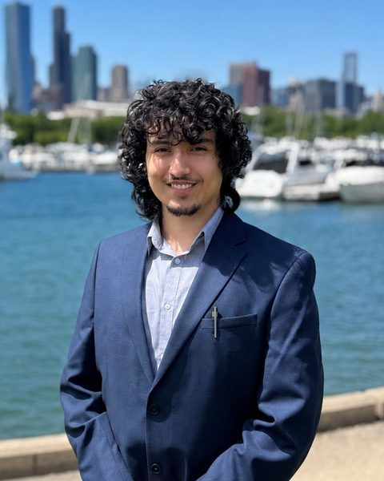
I’m Alex.
I study computer engineering at the University of Illinois, and what I care about is the cross-section of software and hardware: sensors, embedded systems, silicon, and the computing that runs on top of them.
I transferred to Grainger this fall from Wright College, where I co-founded the engineering school’s first IEEE chapter.
I want to work on brain-computer interfaces, and my reason is more specific than the technology being exciting. I want to help build something for people who have lost a lot. People who went through something traumatic, came out of it permanently disabled, and could get movement, speech, or independence back. If not their whole life, at least part of it.
It’s also right where my interests already are. A BCI is hardware and software at the same time. The signal has to come off the brain through real electrodes, get through the noise, fit inside a power budget, and end up as something a person can actually use. Each one of those constraints is interesting to me.
What I think about most is what comes after the current generation. Once this technology has been iterated on a few times, things will be possible that aren’t yet. Eventually I think that means a chip that makes technology a literal extension of the person using it.
Thinking that far ahead also means thinking about how it fails. A system that guesses what you want and gets it wrong is dangerous in a way that a system waiting for a deliberate input isn’t. I’d rather see a reliable mind-controlled cursor ship than an ambitious one that misreads intent.
Space, from the engineering side
I’m less interested in studying space than in building what we send up there: autonomous rovers, satellites, and the instruments they carry.
The part that interests me is the chain. Something physical happens and a sensor picks it up. The signal gets conditioned and digitized, an embedded processor makes sense of it, and at the end a scientist has a measurement they didn’t have before. Every link in that is electronics and computing. And all of it has to work somewhere nobody can reach, on a fixed power budget, with a communications delay and no technician around.
And somewhere past all of that, I’d like to leave the atmosphere myself one day. Who knows.
Why those aren’t two different interests
A neural implant and a planetary rover are basically the same engineering problem.
sensor → analog front end → signal processing → computation → decision → output
Both run that chain, and both run it under hard physical constraints: limited power, limited compute, noisy signals, tight timing, and no way to reach in and fix it once it’s deployed. What you have to learn about the brain is different from what you have to learn about another planet, but the engineering underneath is the same.
So my background looks more scattered on paper than it is. A semiconductor cleanroom, a supercomputer, and a prosthetic limb are the same chain from different ends. It’s also why I keep choosing computer engineering over pure software. I see writing code as part of my future, not all of it, and I want to understand the hardware it runs on.
Experience
Argonne Leadership Computing Facility
Aug 2026
Intro to HPC Bootcamp Argonne National Laboratory · St. Charles, IL
Profiled larnd-sim — the open-source simulator DUNE uses for its liquid-argon detectors — running on Perlmutter at NERSC. Ran the workflow in Jupyter, submitted jobs through Slurm, and used NVIDIA Nsight Systems and Nsight Compute to find where GPU time was going.
Our team found that get_adc_values() stops parallelizing efficiently above four threads per block, and identified it and tracks_current_mc as the targets for further optimization.
I presented the profiling section of our final talk — the Nsight Systems and Nsight Compute slides.
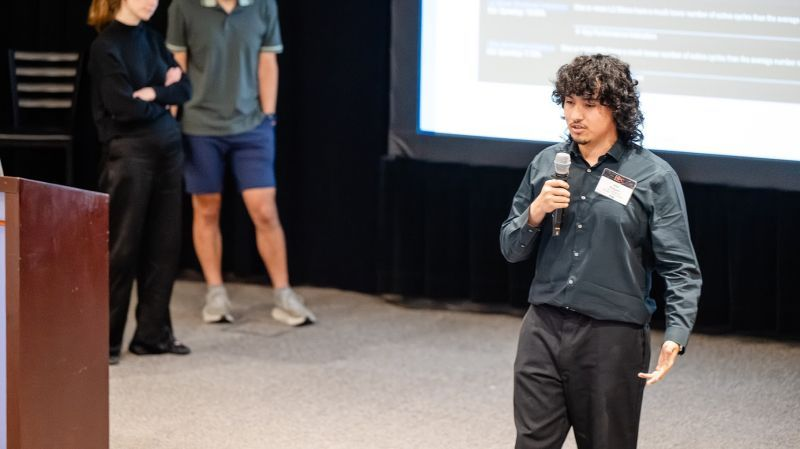
Presenting the profiling section at the closeout — Nsight Compute results behind me
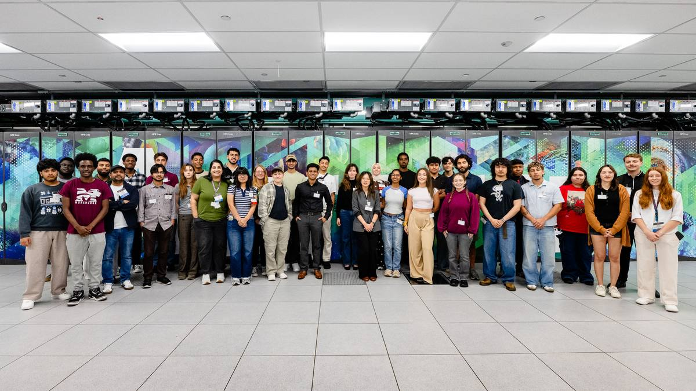
Our cohort in front of Aurora at Argonne — an exascale machine, 4th on the TOP500 as of June 2026. Our own jobs ran on Perlmutter at NERSC.
The scripts were written for us and the week was short. I don’t want to oversell it. But it was the first time I watched a real physics workload run on a real supercomputer and saw exactly where the time goes, and I haven’t stopped thinking about that part.
The plots below are re-plotted from my own output.h5 run files. They aren’t screenshots. I built them and the animation from our simulation output using Claude. One of the project leads asked to share the visualizations with the wider DUNE collaboration, and afterwards asked for the prompts I used.
LArND — neutrinos from the Fermilab beam interacting in liquid argon, ionization drifting to the pixel anodes, with charge and light readout updating live. Built from real simulated events in our day2_baseline output. Credited to all six of us.
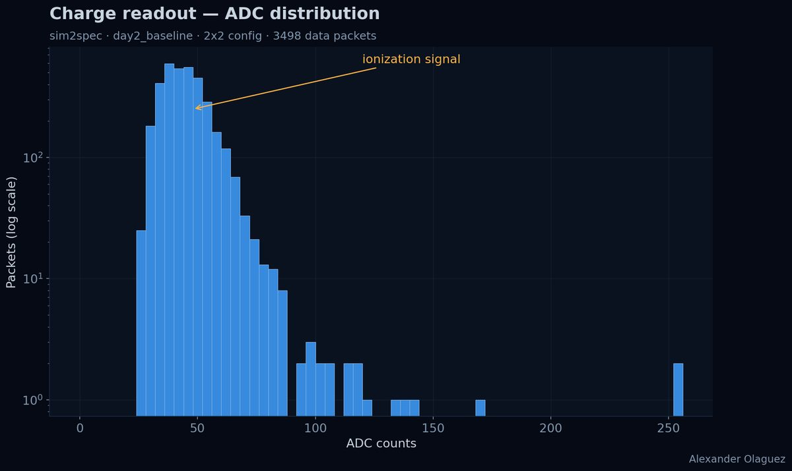
Charge readout — ADC distribution across 3,498 data packets
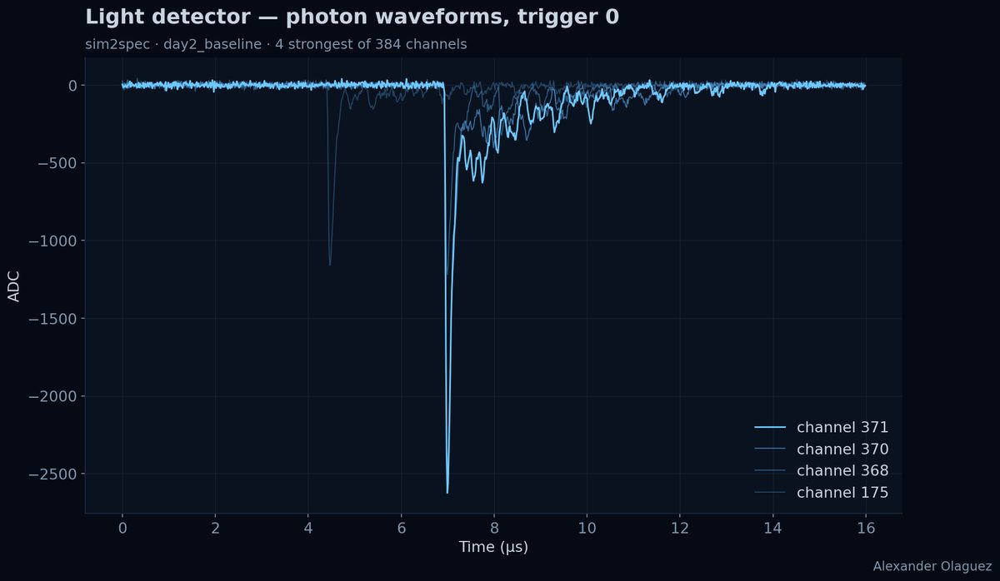
Light readout — the four strongest of 384 photon channels
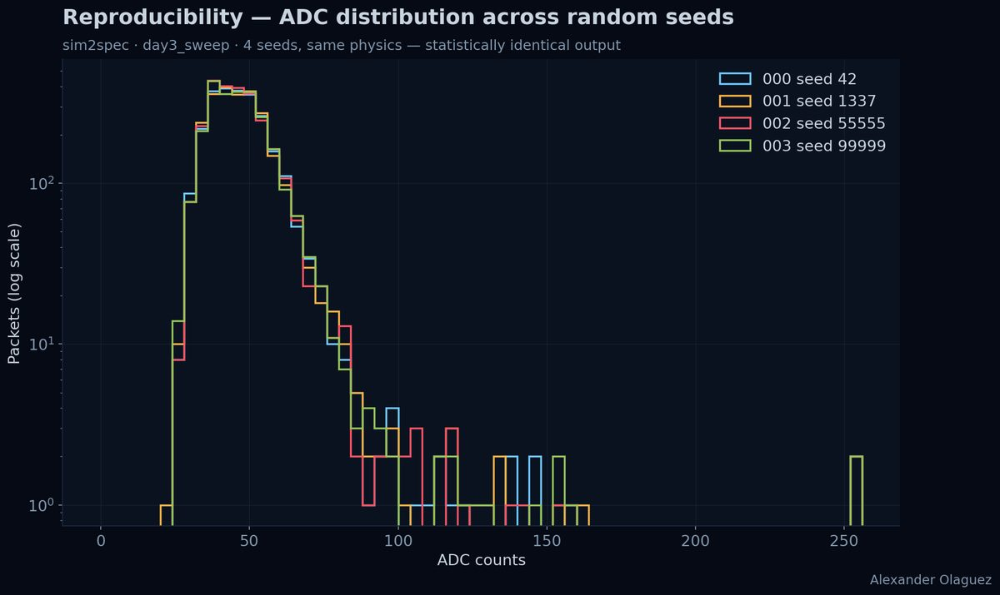
Reproducibility — four random seeds overlaid, statistically identical output
Illinois Semiconductor Workforce Network at UIC
May – Jun 2025
Semiconductor Research Intern Chicago, IL
Four weeks of cleanroom process work: photoresist application, hard bakes, chemical processing, photolithography, etch and metrology, under contamination-control discipline.
Designed a MEMS thermal actuator — 85×85 µm anchors, a ~400×400 µm active region and 5 µm release holes, to a 4 µm minimum feature. It was a design exercise. I didn’t fabricate or test it.
The fabrication side is the part of my background that points toward implantable electronics. Anything small and reliable enough to sit inside a person starts at this level.
This isn’t my group’s wafer, but it’s the same thing we made — everyone in the program ran the same process and the wafers all came out looking like this. The design isn’t mine either. My part was the hands-on side: resist, lithography, bakes, etch, metrology.
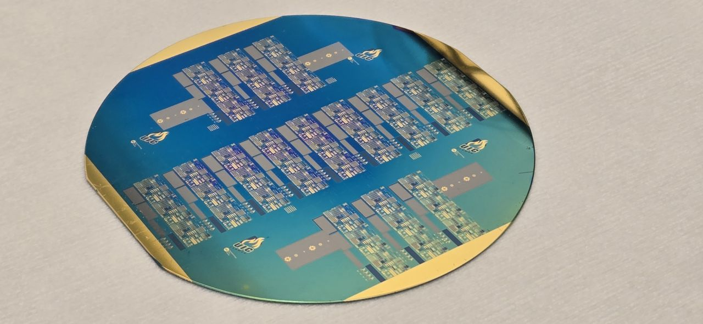
A finished wafer from the program
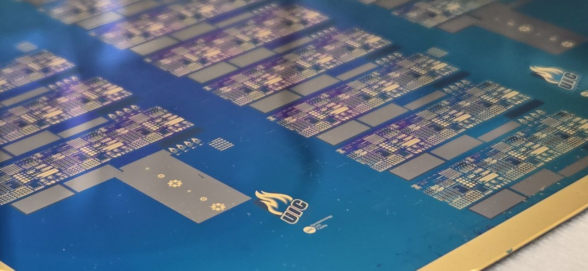
Closer in — the die field and bond pads
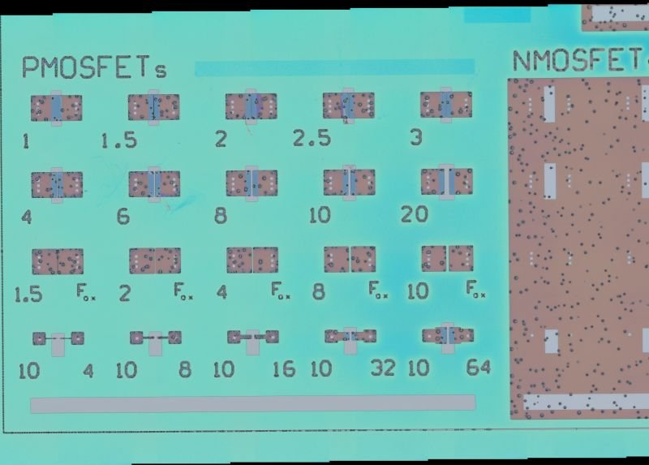
Under the microscope — the PMOSFET test array, each device a different channel geometry so the process can be measured across sizes
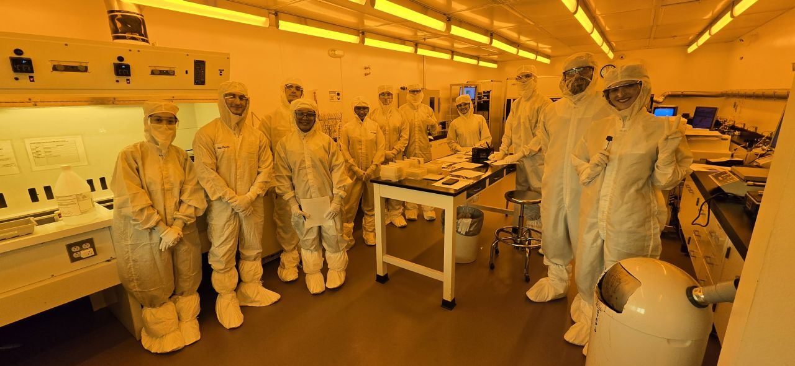
The cohort gowned up at UIC. The yellow light is there so the photoresist doesn’t expose before you want it to.
Projects
I got tired of keeping two calendars in sync by hand, so I built something that syncs them in both directions. It keeps three calendar pairs in step and prints exactly what it changed on every run.
Change detection by hashing. Each event’s fields are hashed against a saved state file, so a re-run only touches what actually moved instead of rewriting both calendars.
Conflict resolution. An event edited on both sides keeps the more recently modified version, and the collision gets reported in the summary rather than silently swallowed.
A guard against mass deletion. If more than half of a pair’s tracked events disappear from a fetch, that pair gets skipped, so an API hiccup can’t turn into a wiped calendar. This is the part I’m most happy with. It’s there because I thought about how it would fail before it did.
Mirror model. Nothing is ever written into a main calendar; each one mirrors into a dedicated calendar on the other side, so a bad run can be deleted wholesale without touching real events.
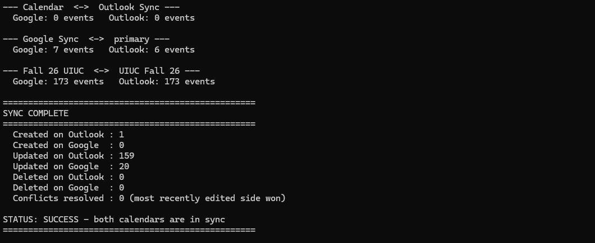
A real run — three pairs checked, 159 events pushed to Outlook, 20 back to Google, nothing deleted, no conflicts
A six-student concept for a below-knee prosthetic that harvests kinetic energy from the wearer’s steps to supplement its battery. The pack is swappable, so the limb never has to go offline to charge. Advised by Dr. Doris Espiritu.
I was the CAD designer. I taught myself the software for this project, studied how existing energy-storing prosthetic feet are shaped, and designed the carbon-fiber-style foot from that. Then I modeled everything above it: the metal connectors between the foot and the calf, the calf section itself, and the hardware that joins it to the socket. The socket is the one part that isn’t mine — that geometry came from an existing preset.
Presented the design and its engineering rationale to judges from academia and industry. Our poster was used as the cover image for a City Colleges of Chicago article on the showcase.
It was a concept and a model. Nothing was fabricated or tested. It was also the first time I worked on hardware meant to go on a person, and I’ve kept coming back to that since.
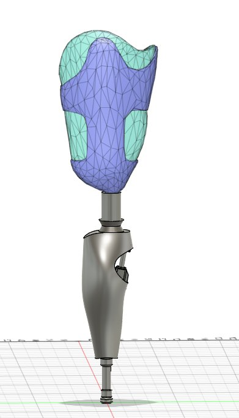
Early rendition — blocked-out assembly
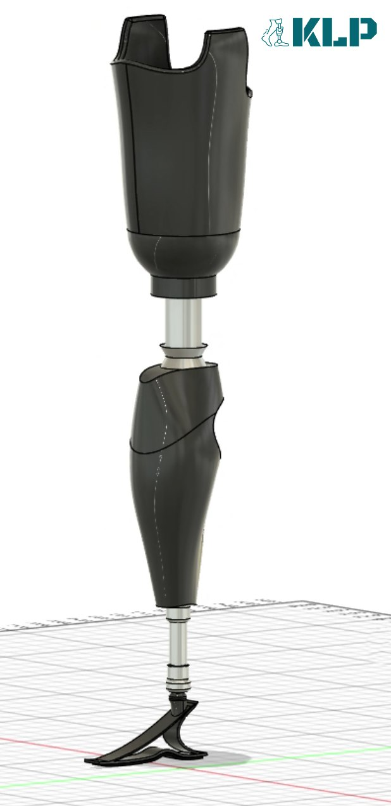
Final limb assembly — everything here is mine except the socket at the top
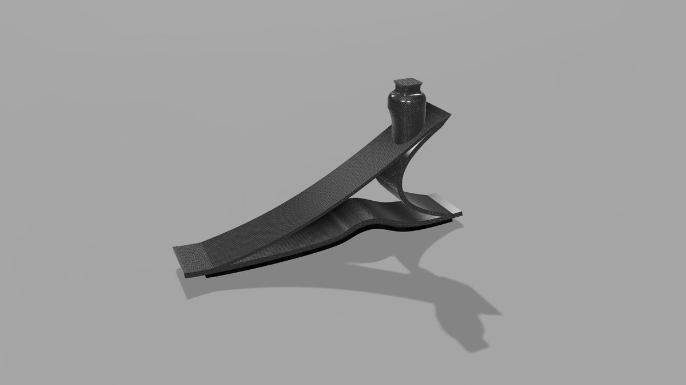
The foot — shaped after how existing energy-storing feet work
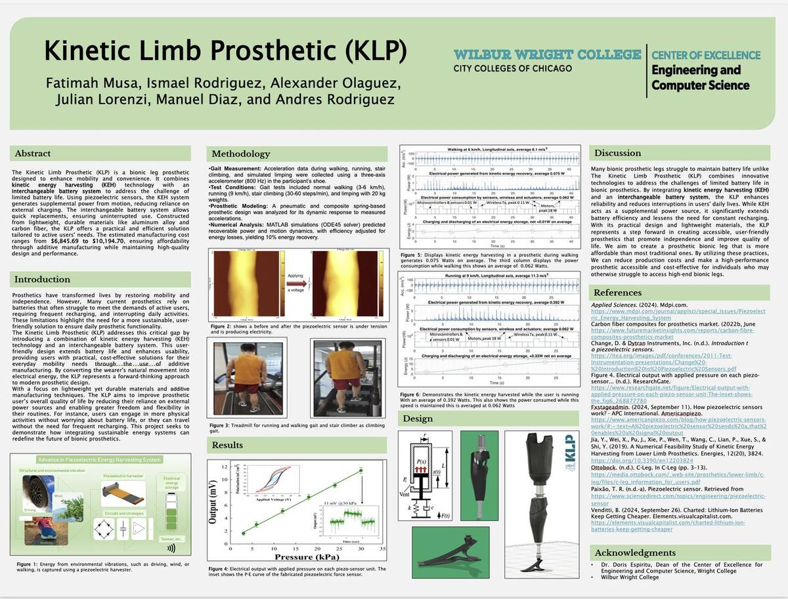
Team research poster
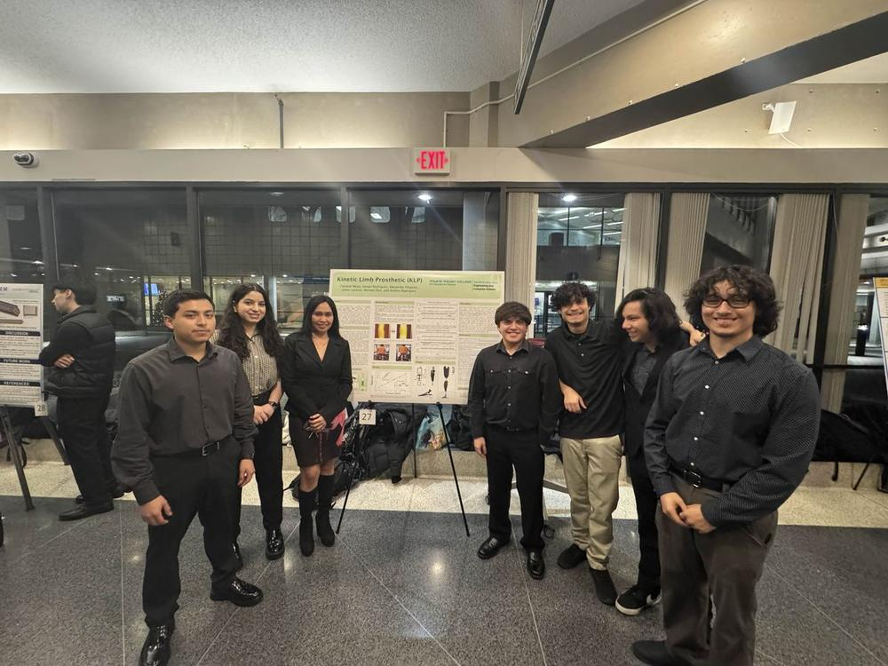
The team with Dr. Doris Espiritu
Background
University of Illinois Urbana–Champaign
Expected May 2028
B.S. Computer Engineering The Grainger College of Engineering
Wilbur Wright College — City Colleges of Chicago
Graduated May 2026
Associate in Engineering Science GPA 3.48 / 4.0
Founding officer of Wright College’s first IEEE student chapter — 50+ students in its first year, and 8+ hands-on workshops on circuit fundamentals, multimeter use and prototyping.
Programming
C++PythonCLinux / Bash
Tools & platforms
Nsight SystemsNsight ComputeSlurmJupyterPerlmutter (NERSC)GPU computingLTspiceCAD / 3D modeling
Coursework
OOP in C++ I & IIData Structures & AlgorithmsCircuit AnalysisLinear Algebra & Discrete MathDifferential EquationsEngineering Physics I–III